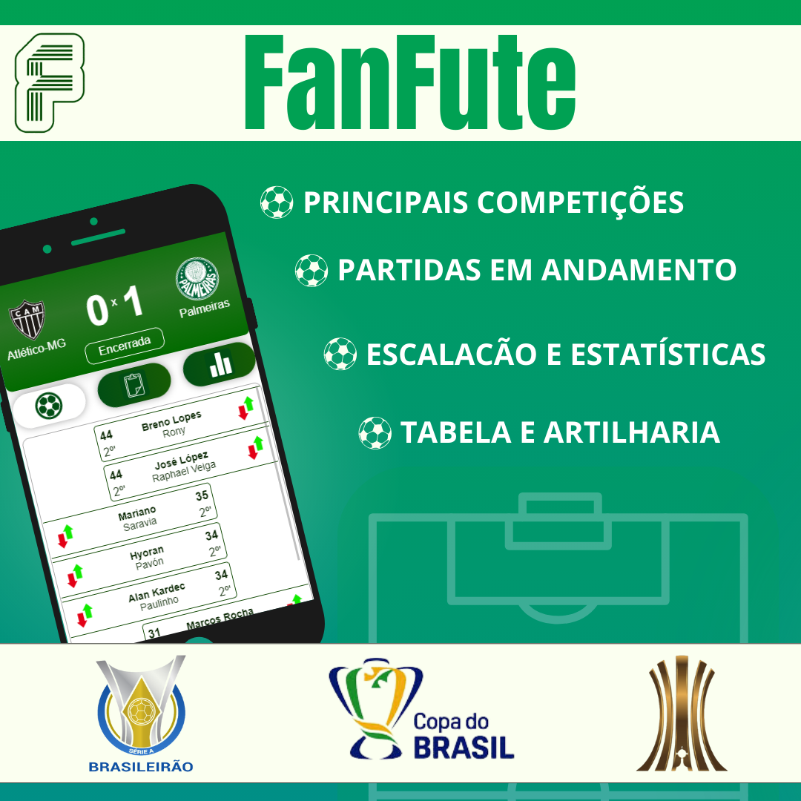
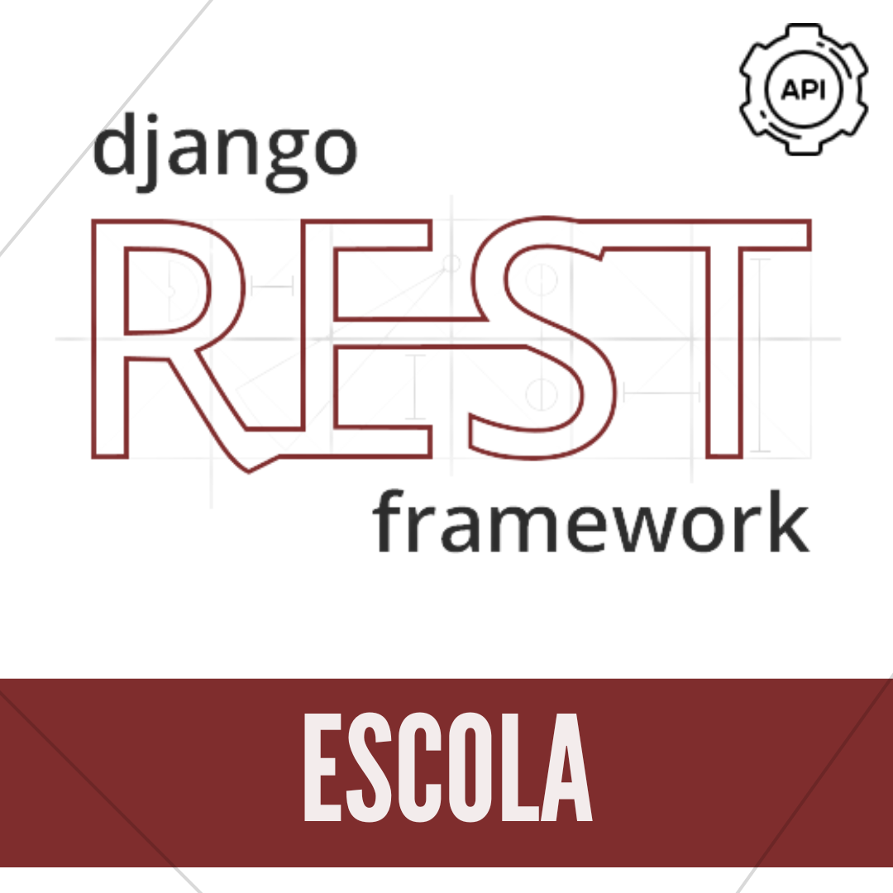

.png)
.png)
.png)
SOBRE MIM
Eu sou o Gabriel, um jovem de 20 anos apaixonado por tecnologia, com um interesse gigantesco por programação e uma vontade insaciável de aprender mais, pronto para dar início a minha jornada profissional nesse mundo que tanto admiro.
Currículo
HABILIDADES
.png)
.png)

.png)
.png)
.png)
.png)
Usado em:
Seleciona a Habilidade!
Curso:
Seleciona a Habilidade!
PROJETOS
TaskHub
.png)
Sobre:
Um projeto de organização de projetos. Simplifica a gestão ao permitir equipes colaborativas, acompanhamento de progresso e centralização de informações com simplicidade
Tecnologias:
.png )
CarToop
.png)
Sobre:
Um projeto pessoal - Plataforma online que une entusiastas de veículos. Com recursos abrangentes, permite comprar, vender e até favoritar carros, motos, vans e caminhões.
Tecnologias:
FanFute
Sobre:
Projeto dedicado ao mundo do futebol, oferecendo aos fãs uma experiência completa. Apresentamos três competições, fornecemos tabelas e rodadas sempre atualizadas, disponibilizamos estatísticas detalhadas e mantemos você informado sobre as escalações das equipes.
Tecnologias:
API Escola
Sobre:
API desenvolvida via Django Rest Framework, proporciona um gerenciamento abrangente de alunos e cursos, permitindo visualizar matrículas individuais, filtrar informações, buscar dados específicos e implementar paginação. Validando rigorosamente os dados, garante-se a precisão das informações. Uma solução dinâmica e eficaz para administração educacional.
Tecnologias:
Screen Series
Este projeto consome uma API de séries, salvando informações como título da série, temporada, dados de cada episódio e elenco. Além disso, utiliza a API do ChatGPT para traduzir automaticamente as sinopses de cada episódio, enriquecendo a experiência do usuário.
Screen Music
Projeto Java que cadastra artistas, os afilia a músicas e salva dados em um banco de dados SQL. Oferece flexibilidade na associação de artistas a várias músicas, proporcionando um gerenciamento abrangente. Integração com a API ChatGPT , permitindo pesquisas intuitivas e detalhadas sobre os artistas.
Tabela FIPE
Desenvolvi um projeto em Java usando o framework Spring para acessar a tabela FIPE. Com essa aplicação, é possível realizar consultas de veículos por categoria, marca, modelo e ano. A solução proporciona uma experiência ágil e eficiente na obtenção de informações sobre preços de veículos no mercado brasileiro.
Quiz Educacional
Projeto foi desenvolvido como parte do curso de Ciência da Computação com o objetivo de criar um jogo educativo em Java utilizando a biblioteca JavaFX. Principal tema abordado é a Educação Ambienta